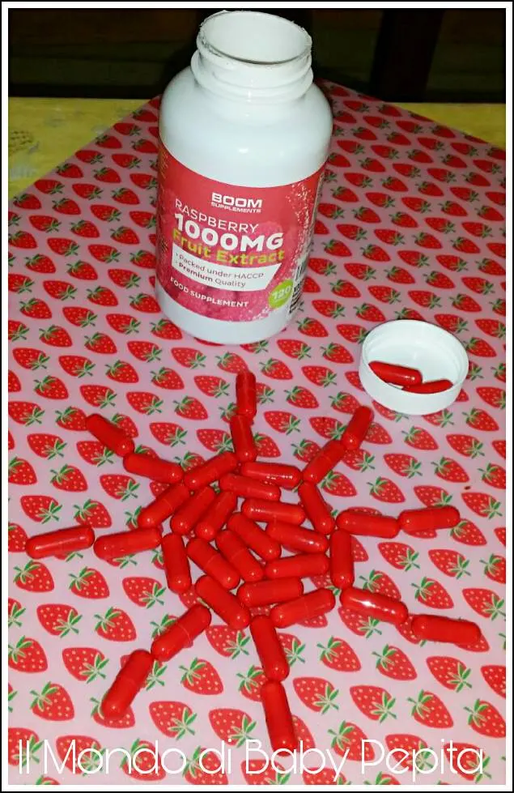
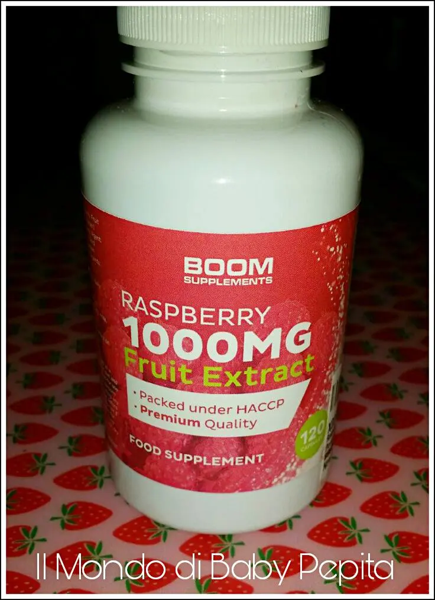
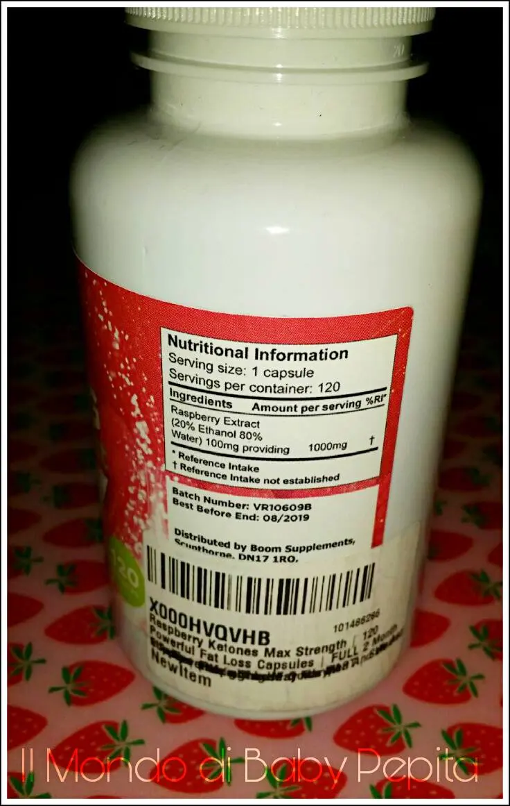
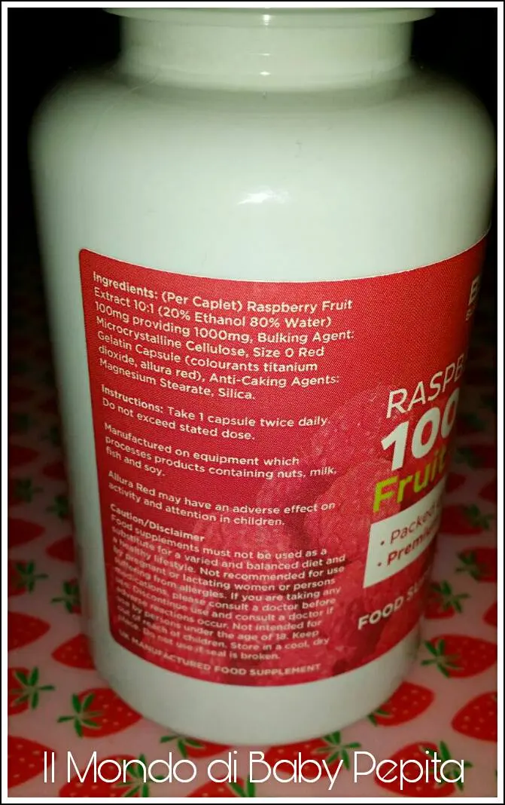

integratore al Chetone di Lampone

L'ingrediente principale è il chetone di lampone.

Cos'è?
I chetoni sono molecole composte da un gruppo carbonilico e due radicali alchilici; in pratica derivano dall'ossidoriduzione e, nell'organismo umano, sono lo 'scarto' di ciò che mangiamo.
Insomma detto così sembra che facciano male ma invece hanno una funzione e cioè quello di inibire lo stimolo nervoso dell'appetito.
Quindi lavora sul metabolismo.

Sono 120 pillole da prendere 2 al giorno.
O 1 prima dei pasti principali o tutti e 2 prima di un solo pasto, purché siano 2 pillole quotidiane.


Si tratta dunque sempre di un'integratore alimentare e non un farmaco o la soluzione della perdita di peso quindi è sempre associabile ad una sana dieta o alimentazione corretta e non proprio priva di carboidrati.
Per chi assume farmaci ovviamente è sempre meglio prima consumare il proprio dietologo o nutrizionista.
PREZZO: 13,97 €
Dove trovarlo:
SITO
Per quanto riguarda me: